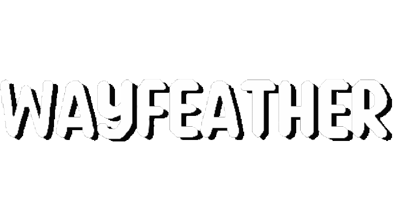

Gyle Viloria
Game Developer, Composer, Sound Designer
Hello there! My name is Gyle Viloria, and I'm an independent game developer and freelance composer from the Bay Area. I graduated from the University of California, Santa Cruz cum laude with a B.S. in Computer Science: Computer Game Design.
Games
Rusa: Tail of Gazelle


Rusa: Tail of Gazelle is a visual novel made for the SuNoFes 2024 game jam. In this game jam, teams had 2 months to create a visual novel or story-based game. We used Ren'Py as our game engine. I was a programmer and the main composer and sound designer.
- Ren'Py
- REAPER
- FL Studio
- Audacity
Wayfeather
Wayfeather is a sidescroller platformer made for the ZenoGameJam 6. Teams were given 1 week to create a game based on the theme "Going Up". The game was made in Godot. was the main programmer, composer, sound designer, and assistant level designer. This was the first game jam I participated in, and our game placed 9th overall out of 143 submissions.
- Godot
- MuseScore Studio
Blorange
Blorange is a puzzle game made for a class project. We had to create a game using the Phaser framework. I was the composer, sound designer, graphics artist, and lead level designer.
- Phaser
- LMMS
- JavaScript
Music
Rusa: Tail of Gazelle
The tone of this game involves mystery, information, discovery, and corruption. The main theme(s) were created in REAPER, but after creating the final drafts of them, the project files got corrupted. I had to switch to FL Studio to compose all of the other tracks.
The SFX were a combination of free sounds, along with self-recorded foley plus editing. They had to be unintrusive yet meaningful, since these are triggered from dialogue from the visual novel.
The Disappearance of Gazelle
Unearth
Remembrance
- REAPER
- FL Studio
- Audacity
Wayfeather OST
Wayfeather leans more towards an orchestral style, with both the music and the sound effects being created in MuseScore Studio. With the SFX being piano riffs, I had to make sure that all of the effects fit with the background music.
Main Theme Song
Tutorial
Final Flight
- MuseScore Studio
Blorange OST
When coming up with the overall sound design for Blorange, I wanted an 8-bit retro soundscape in both the music and the sound effects. However, at the time, I didn't really know how to work with only noise channels and a few square and triangle waves (which is how older consoles' sound systems worked). So, I instead composed first in MuseScore Studio, then translated the MIDI files over to LMMS, using an 8-bit plugin.
Main Theme Song
Play
Boss Level
- MuseScore Studio
- LMMS
SKILLS
Engines, Frameworks, Tools
- Unity
- Godot
- Ren'Py
- Phaser
- FMOD
- pandas
- Git
- Trello
- Miro
Languages
- Python
- C#
- C++
- Java
- JavaScript
- TypeScript
- HTML
- CSS
Audio Programs
- FL Studio
- MuseScore Studio
- REAPER
- Audacity
- LMMS
- Minecraft Note Block Studio